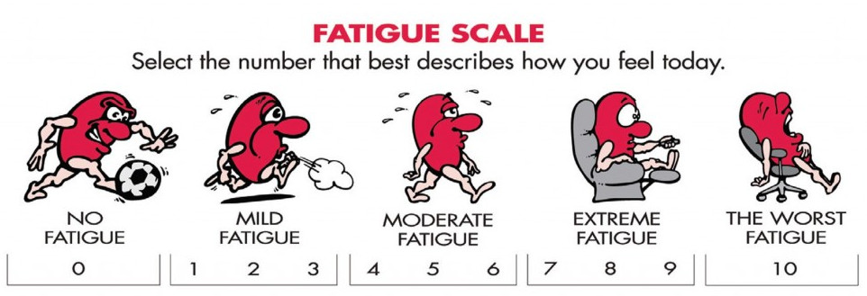

The JavaScript ecosystem and the modern Web
Réseau ARAMIS - 23/03/2017
 Baptiste Meurant
Baptiste MeurantWho am I?
The evolution of the Web
Usage
read-only & static
 read-write & dynamic
read-write & dynamic

User generated content

Web application architectures

The mobile revolution


Responsive Web

Web browsers war


Web standards
Evolution of standards

HTML

{kind=link}
CSS

JavaScript
JavaScript: the language ECMAScript: the standard
Browser compatibility

Tools
We need tools


JavaScript Fatigue

JavaScript Fatigue Fatigue
What kind of tool?
- Shim: Normalize browser API
- Polyfill: Conditional implementation of missing browser features
- Library: Set of reusable features / functions / components
- Micro library: A library dedicated to a single feature
- Framework: Set of structured patterns and behaviours that are part of a general programming model
Cross browser compatibility
HTML5 Please

Can I Use?
 http://caniuse.com/
http://caniuse.com/
Polyfills
A multitude of dedicated micro libraries, mostly composed of few functions implementing a feature on engines that do not yet support that feature. https://developer.mozilla.org/en-US/docs/Web/JavaScript/Reference
https://developer.mozilla.org/en-US/docs/Web/JavaScript/Reference

Modernizr
feature detection: executes code / polyfill based on the actual capabilities of the browser
if (Modernizr.awesomeNewFeature) {
showOffAwesomeNewFeature();
} else {
getTheOldLameExperience();
}
npm install -g modernizrAutoprefixer
dealing with CSS vendor prefixes https://github.com/postcss/autoprefixer
source
https://github.com/postcss/autoprefixer
sourcea {
transition: transform 1s
}
a {
-webkit-transition: -webkit-transform 1s;
transition: -ms-transform 1s;
transition: transform 1s
}